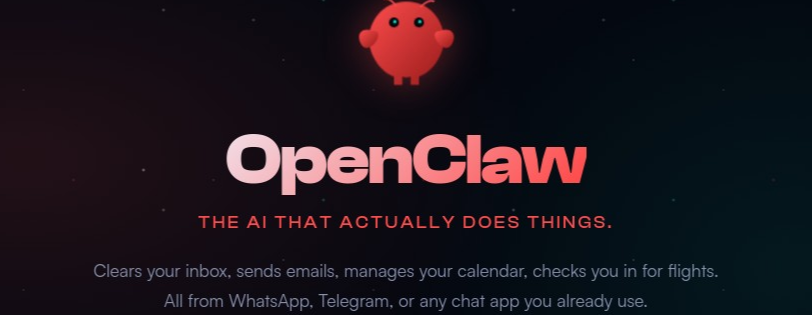

INSTALLERThe OpenClaw Windows Installer is a premium, open-source distribution designed to bridge the gap between high-performance AI and Windows security standards. We focus on three core entities to ensure a zero-error deployment.
Our installer leverages Windows Subsystem for Linux 2 (WSL2) to run a native Linux kernel on Windows. This ensures that OpenClaw's heavy AI workloads operate with maximum performance and 100% compatibility with its original environment.
Security is paramount. By enforcing Local Loopback Binding (127.0.0.1), the installer ensures that your AI assistant is only accessible from your machine. This prevents unauthorized network listeners and remote access exploits by default.
We proactively monitor the Common Vulnerabilities and Exposures (CVE) database to harden our installation scripts against known exploits. Our 2026 build includes pre-configured firewall rules and environment isolation to protect your local data.
We leverage industry-standard security and open-source benchmarks to maintain the integrity of our distribution.